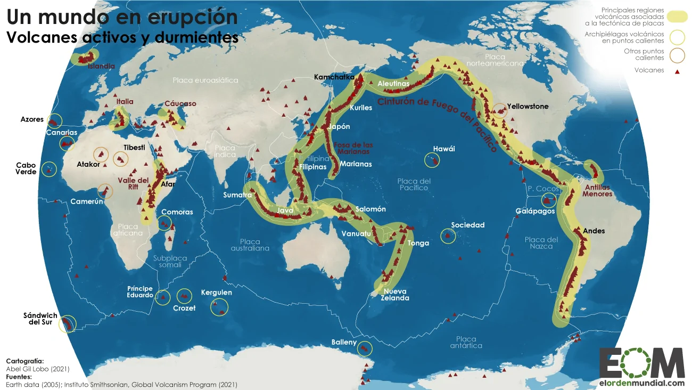
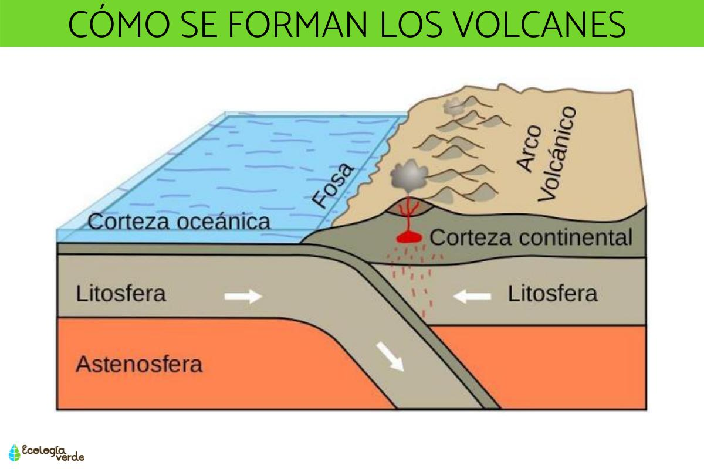

Un volcán es una abertura en la corteza terrestre, por la que puede emerger el magma o lava, junto a gases, cenizas y otros materiales provenientes de las profundidades de la Tierra. Pueden hallarse en otros planetas y satélites del espacio. Los volcanes son bastante frecuentes en la corteza terrestre, especialmente en las regiones de intensa actividad sísmica, pudiendo hallarse en la plataforma continental o en el lecho oceánico. Sus erupciones, que es como se denomina al derrame de magma hirviente hacia el exterior, suelen ser cíclicas y esporádicas, variando en intensidad y potencial destructivo.
Se consideran una de las principales fuentes de materiales rocosos en la corteza terrestre. Además, son una de las principales amenazas naturales medioambientales, capaces de producir enormes incendios forestales, de arrojar toneladas de material a la atmósfera (gases y cenizas, sobre todo) y de alterar por lo tanto el balance químico de la biósfera terrestre. Muchas extinciones masivas de la historia geológica terrestre se atribuyen a intensos y/o prolongados episodios de actividad volcánica. Los volcanes son estudiados por los geólogos y tienen una importante correlación con la actividad sísmica terrestre, como terremotos y movimientos tectónicos. Los volcanes toman su nombre del dios griego Hefesto, Vulcano.
Los volcanes pueden tener muchas formas, pero generalmente consisten en una estructura cónica consecuencia de la deposición de materiales tras las sucesivas erupciones. Las mismas pueden alcanzar alturas de incluso 8000 metros sobre el nivel del mar. Los materiales que los constituyen pueden ser diversos, dependiendo del tipo de volcán y de la naturaleza del subsuelo donde se produzcan.
Por otro lado, poseen un ciclo de vida prolongado y diverso, que consiste en tres etapas:
Los volcanes son montañas con una ruptura en la corteza terrestre por donde expulsan magma, ceniza y gases provenientes del interior de la tierra. Cuando entran en erupción, la lava expulsada por los cráteres se acumula en la superficie y, al enfriarse, forma el cono del volcán. Los volcanes suelen formarse en los límites entre placas tectónicas, bien porque estas se separan, creando aperturas por las que emerge el magma, o bien porque una se desliza bajo la otra en un proceso denominado subducción. También pueden aparecer volcanes, conocidos como puntos calientes, en zonas sin movimiento entre placas. En estos casos, su formación se debe a la existencia de plumas de magma ascendente. Hawái es el mejor ejemplo de punto caliente.

1- La cámara magmática es donde está almacenada la roca fundida, que puede provenir de la Astenósfera
(100-700 kilómetros, en los límites de placas, dorsales y zonas de subducción) o de la Litósfera (por
descompresión de los sólidos se vuelven líquidos), que forma la lava.
2- La chimenea es el conducto por donde asciende la lava.
3- El cráter es la parte del volcán por donde los materiales son arrojados al exterior.
4- El cono volcánico es la aglomeración de lava y productos fragmentados. También es posible que en las
fracturas del cono volcánico o en las erupciones se formen cráteres adventicios que se abren en los flancos
o en su base y cuyas chimeneas secundarias tienen comunicación con la principal.